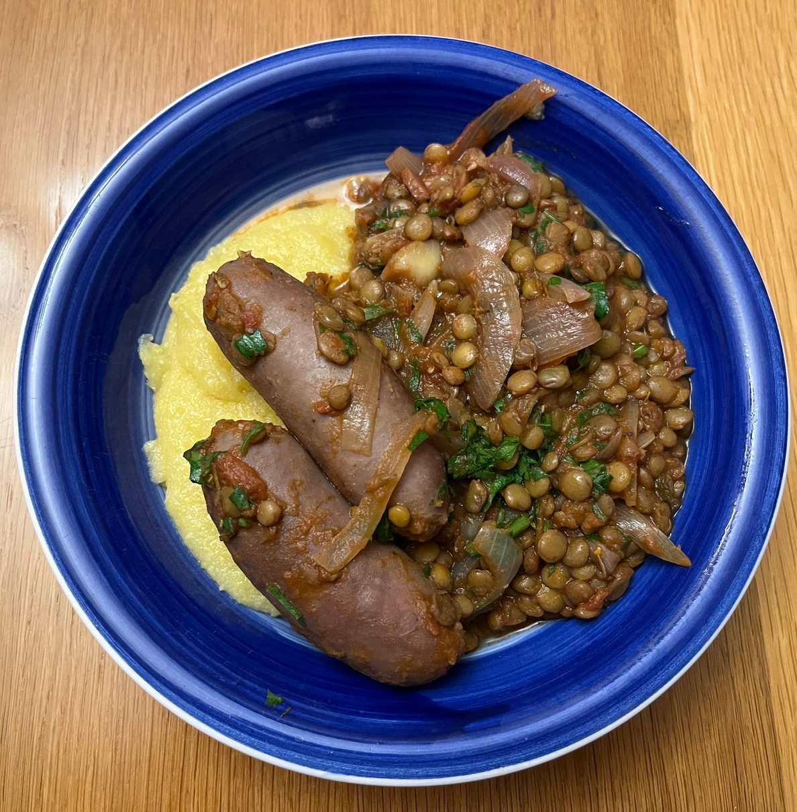

Sausage and lentils
Winter warmer.

Ingredients
- 2 diced onions
- 3 crushed cloves of garlic
- 500g Italian sausage (beef)
- Small bunch of sage
- 1 glass red wine
- 1 tin tomatoes
- 300g dry lentils
- Chopped parsley
- 1 cup dried polenta, or nice bread to serve
Instructions
- Fry up the diced onion and chopped garlic in some olive oil, and get your lentils on the boil in a separate pot.
- And the herbs to the mix, along with the sausage so it can brown.
- Pour in the red wine, and then add the tinned tomatoes to simmer for 20-30min (while the lentils cook).
- Add in the lentils and stir them in with the chopped parsley.
- Serve with polenta or some other starch of choice.
Serves 4.